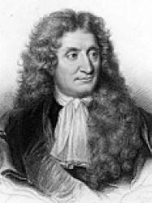

Jean de La Fontaine

Nhân kỷ niệm 300 năm ngày mất của nhà viết truyện ngụ ngôn nổi tiếng Jean de la Fontaine (1621-1695), tập Truyện Ngụ ngôn toàn tập của ông được xuất bản kèm theo 250 minh họa. Theo giáo sư Marc Fumaroli tại Cao đẳng học viện Pháp quốc và chuyên gia về thế kỷ XVII ở Pháp, La Fontaine là một nhà văn “vẫn sống và hoạt động”. Đấy là nhà văn của sự dịu dàng, vui sống và hạnh phúc, những nét căn bản trong thơ ông. Về cơ bản La Fontaine là người theo tư tưởng Flaton - trọng sự cao quý về tinh thần. Người ta chỉ có thể tiếp cận với chân lý qua sự trung gian của cái đẹp và niềm vui thích gắn liền với cái đẹp.
Những truyện ngụ ngôn của ông, ở khắp mọi thời vẫn được người ta ngưỡng mộ. Vậy thì cái bí mật của sự thành công phổ quát đó là gì? Kể từ thời phục hưng, rất ít tác giả lại nghĩ rằng họ có thể xây dựng một tác phẩm lấy từ truyện ngụ ngôn. La Fontaine đã nẩy ra cái ý định thiên tài là ông có thể dùng cái cốt lõi vốn già như trái đất và bao phủ nó bằng những trang sức để làm cho mọi truyện kể trở thành bản tóm tắt thực sự của tất cả những cái tinh tế của thơ ca Pháp, như nó đã từng rộ nở vào đầu thế kỷ XVII. Ông đã tạo ra quanh một truyện ngụ ngôn có phần khô khan và vào thời đấy mang tính chất sư phạm, một không khí của sự trò chuyện duyên dáng, lịch sự và quyến rũ. Ông cũng đã làm điều mà không một nhà thơ Pháp nào trước ông đã từng làm, kể cả Marot: Ông giải phóng khuôn khổ câu thơ, tạo ra một thi pháp điêu luyện, tô điểm cho các truyện ngụ ngôn một sự lưu loát đầy nhạc tính.
Bản thân La Fontaine là một người sành sỏi về âm nhạc đương thời, và đặc biệt rất thích loại đàn luth, một nhạc cụ mà một mình nó đệm riêng cho ca khúc rất thịnh hành vào thời 1640 đến 1660. Đây là thứ âm nhạc rất tâm tình, đầy nội cảm, gắn chặt với một sự thưởng thức sâu lắng và chăm chú trong những nhóm nhỏ bè bạn. Đây là cái nhịp điệu nội tâm của đối thoại. Toàn bộ văn chương thế kỷ XVII trước hết là sự thưởng thức bằng tai, thứ bút chiến thường xuyên chống lại thứ vương quyền tuyệt đối. Khuynh hướng của các truyện ngụ ngôn của ông trước hết là thù địch với quyền bính nhà vua. Ông đã kế thừa một lý tưởng về một nước Pháp, dù có ngôi vua, nhưng đa thực thể, chống chiến tranh ở ngoài nước và hòa hoãn với Rome. Quan niệm đó về nước Pháp đi đôi với một quan niệm về châu Âu mà nguyên tắc chủ đạo của nó không phải là một quyền lực quân sự mà là một quyền lực tinh thần. Chủ đề thường xuyên của những truyện ngụ ngôn là hòa bình. Tự thâm tâm, La Fontaine là một con người hiền hậu và theo lý tưởng hòa bình. Thành công của Truyện Ngụ Ngôn năm 1668 không chỉ là thành công của một tuyệt tác văn học bất ngờ mà còn là sự trả đũa lại một cách nhẹ nhàng, gián tiếp, đầy chất thơ trước sự chiến thắng của nhà nước quân sự và quan liêu. Chính vì vậy bản thân nó là một thứ quyền lực thực sự vì nó duy trì – trước quyền lực nhà vua đòi sự phục tùng và nô dịch, loại trừ sự phóng khoáng và những quyền tự do – một chân trời của sự quyến rũ, của suy tư, của trí tuệ và sự dịu dàng. La Fontaine và bạn bè ông tin vào một sự hòa hợp ở trên cao mà người ta có thể kéo nó xuống để chiếm lĩnh chung quanh họ. Sự hòa hợp không phải là một trật tự duy lý. Trong các truyện ngụ ngôn, không có đạo lý đã hoàn thiện sẵn. Đây là lúc mà nhờ vào đức hạnh cao cả thiên nhiên người ta trở nên có thể nhận biết được sự thánh thiện. Một thiên nhiên có được cái đẹp, điều thiện về tình yêu. Khi mà lý lẽ cùng đường, người ta tìm thấy ngụ ngôn. Và với ngụ ngôn người ta đến với chân lý êm đềm mà lý lẽ không thể nào đạt tới.
Riêng về con người của La Fontaine, một trong những chân dung tuyệt vời nhất về ông là của Mlle de Scudéry trong cuốn tiểu thuyết Le Clélie mà ông xuất hiện dưới cái thác danh là Anacréon. Cả trước khi ông xuất bản Truyện Ngụ Ngôn, đây đã là những nét cơ bản về tính cách của ông: “Nhạy cảm với mọi sinh thú không trừ cái gì”. Cái mà ông thích nhất là những cuộc tụ hội của “dăm sáu bè bạn, không có công chuyện mà cũng không có ưu phiền”, và giữa họ với nhau là việc “trò chuyện tự do, tào lao và vui thích”, và xen vào đó là những khúc hát nhẹ nhàng, nghe nhạc và ít phút dạo chơi. Ông còn là nhà thơ trong sáng. Một trong những điều ám ảnh ông nhiều là “sự phiền muộn”. Nghệ thuật được tạo ra để cho chúng ta bớt đi những nỗi buồn chán, dù là chút ít. Phiền muộn là cái cảm giác nặng nề u ám của một thế giới không âm nhạc. Theo nghĩa đó, La Fontaine là một nhà thơ hiện đại. Ông hình dung trước sự phân cực mang chất Baudelaire giữa thế giới ca hát của văn học và sự phiền muộn mà nó muốn xua đuổi đi.
Chính vì thế việc nghiên cứu La Fontaine không phải là việc chơi đồ cổ. Thế kỷ XVII làm bối cảnh cho những nhà văn lãng mạn lớn của Pháp. Nó mở đường cho người ta tìm hiểu các tác giả của thế kỷ XIXvà tuyệt tác của Alexandre Dumas, bộ tiểu thuyết 3 tập Ba người lính ngự lâm, đấy là cả một biển thơ và chất liệu lịch sử. Người ta tìm thấy trong thơ của Baudelaire tất cả những gì làm vang vọng làn thơ ca ba-rốc, và để đến với Proust, cần phải thấy ra rằng ở những tầng sâu thẳm nhất của Đi tìm thời gian đã mất là Mme de Sévigné, Saint-Simon, Nữ Công tước Guermantes… Là một nhà thơ lớn của hoài niệm, Proust nhìn thấy tất cả mọi giai đoạn của một nền văn hóa, và thế kỷ XVII là điểm tựa cơ bản nhất cho những suy tưởng của ông.
Một trong những tấn kịch của thời đại chúng ta là phải sống trên bề mặt của chính mình và của người khác. Cần phải làm tất cả để đánh thức ký ức để nhận biết cái chiều thứ tư là thời gian của hồi tưởng. Bởi thế La Fontaine là một nhà văn đang sống và đang hoạt động.